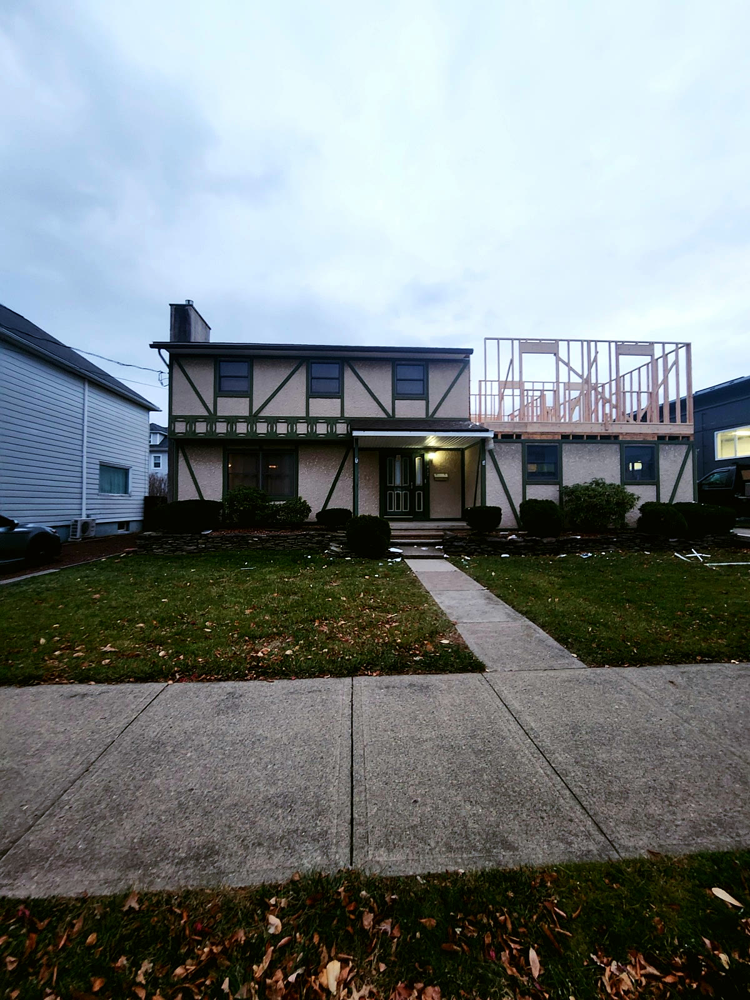

PSI Construction · Kingston & Wilkes-Barre, PA
Home Addition Contractor — Second Storeys, Bump-Outs & In-Law Suites
An addition has to look like it was always there and work like it was planned from the start. We handle the structural tie-in, the roofline, the services, and the finishes — a one-storey house gaining a full second floor is a job we have done, start to finish.
How it goes
How we build an addition
-
1
Feasibility & design
What the structure can carry, what zoning allows, and drawings that make the new work read as original.
Before drawing anything we look at what the existing house can carry and what the lot allows: footings and foundation, bearing walls, roof structure, setbacks, height limits and lot coverage. Then the addition is designed so that the roofline, windows, siding and trim read as part of the original house rather than a box bolted on. You get drawings you can picture yourself in, and a price against them.
-
2
Permits & engineering
Stamped plans and the permit in hand before demolition.
Additions almost always need engineering — a new load path into the old structure, a beam where a wall comes out, footings sized to the new weight. We have the plans stamped, file for the building permit and any zoning relief, and have the permit in hand before demolition starts. Your neighbours, your insurer and your future buyer all care that this was done right.
-
3
Structure
Foundation or bearing points, then the new floor and walls framed onto the existing house.
For a second storey, the roof comes off and new floor framing is set on the existing walls, reinforced where the engineer calls for it. For a ground-floor addition, new footings and foundation are poured and the floor and walls are framed and tied into the house at the studs and the rim. Temporary roofs and tarps protect the house while it is open, and we sequence the work so the house is never exposed overnight.
-
4
Roof & weather-tight
Roof structure, sheathing, wrap — the addition closed in before the house is opened to it.
Roof structure, sheathing, underlayment and shingles tie the new roof into the old one with proper flashing at every intersection. House wrap, windows and doors go in, and the addition is weather-tight before we open the wall between it and the house. Siding is matched to the existing — same profile, same exposure — or the whole elevation is re-sided so there is no seam.
-
5
Systems & finishes
Plumbing, electrical and HVAC extended; insulation, drywall, floors and trim matched through.
Plumbing, electrical and HVAC are extended from the existing systems, with the panel, water heater or furnace upgraded if the extra space needs it. Insulation, drywall, flooring, doors and trim are matched to the house: the same floor species and stain, the same casing profile, the same ceiling height where we can get it.
-
6
Tie-in & handover
The seam between old and new finished so you can't find it.
The line between old and new is where additions show. We finish floors through the opening, patch and skim adjoining walls, continue trim and paint, and adjust the outside grade and landscaping so the addition sits like it was always there. A punch-list walk, final inspection and handover close it out.
Get a quote
Tell us about your home addition project
A few multiple-choice questions so we show up already knowing the job. Every one has a “not sure yet” option. Or call — 570-338-8PSI (774).